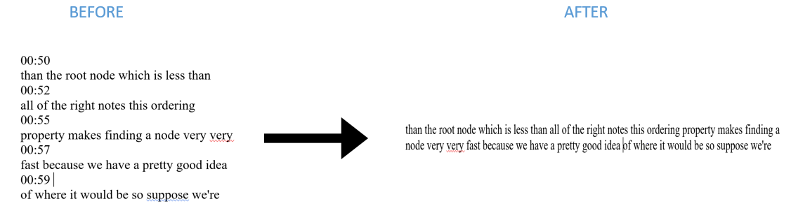

<!-- <div class="all" >

    <mat-sidenav-container>
    
        <mat-sidenav #sidenav mode="side" opened style="margin-top:2px;position:fixed">
            <nav style="text-align: center">
                <span class="badge badge-info" 
                style="width:143px;height:38px;margin-bottom:2px;padding-top:10px">
                <font size="3.5">OPTIONS</font>
                </span>
            </nav>
            <nav *ngFor="let option of options; index as i">
                <app-side-nav-button [name]="option" [routerLink]="relations[i]"></app-side-nav-button>
            </nav>
        </mat-sidenav>
    
        <mat-sidenav-content style="background-color:white">
            <app-header>
            </app-header><br>
            <div class="jumbotron" style="border-style:solid;border-width:thin;
            border-color: rgb(66, 99, 99);display:inline-block;width:100%; margin-top:-1%;">
                <router-outlet></router-outlet>
            </div>
            <app-footer></app-footer>
        </mat-sidenav-content>
        
    </mat-sidenav-container>
    
</div> -->

<div style="background-color:rgb(240, 240, 240);min-width:100%;min-height:100%;font-family:-apple-system, BlinkMacSystemFont, 'Segoe UI', Roboto, Oxygen, Ubuntu, Cantarell, 'Open Sans', 'Helvetica Neue', sans-serif">
    <div class="row">

        <div class="col-lg-3 col-md-3 col-sm-12 col-xs-12">
            <div style="background-color:white;border-radius:5px;margin-top:1%;margin-left:3%;margin-right:-3%">
                <div></div><br>
                <h5 style="text-align: center">Faizan A. Ishaq</h5>
                <p style="text-align:center">
                    <small>
                        Senior at George Mason University<br/>
                        IT Major / CS Minor<br/>
                        Graduating : Dec 2019
                    </small>
                </p>

                <hr style="margin-left:5%;margin-right:5%"><br>

                <p class="contactInfo">
                    <mat-icon class="infoIcons">list_alt</mat-icon>
                    <a href="https://drive.google.com/open?id=1YZ8vG7rlnxSNNW-UtTp-pjtjH73ZfNuH" target="_blank">Resume</a>
                </p>

                <p class="contactInfo">

                    <mat-icon class="infoIcons">email</mat-icon>
                    <a href="mailto:fishaq@masonlive.gmu.edu">fishaq@masonlive.gmu.edu</a>
                </p>

                <p class="contactInfo">
                    <mat-icon class="infoIcons">phone</mat-icon>
                    (703) 507-5536
                <p>

                <p class="contactInfo">
                    <mat-icon class="infoIcons">place</mat-icon>
                    Alexandria VA
                <p><br/>

                <hr style="margin-left:5%;margin-right:5%"><br>

                <p style="text-align:center">
                    <a href="https://github.com/faizanishaq94" target="_blank"></a>
                    <a href="https://www.linkedin.com/in/faizanishaq94/" target="_blank"></a>
                </p>
            </div>
        </div>

        <div class="col-lg-9 col-md-9 col-sm-12 col-xs-12">
            <div style="background-color:white;border-radius:5px;margin-top:0.3%;margin-right:1%">
                <span>
                    <div class="row" style="margin-left:-0.1%">
                        <div class="col-lg-2 col-md-3 col-sm-6 col-xs-6" style="margin-top:1%">
                            <button type="button" class="btn btn-link" (click)="openTab(0)" style="color:black" 
                            [ngStyle]="{'font-weight' : buttons[0] ? 'bold' : 'normal'}">
                                <mat-icon style="margin-right:10px">perm_identity</mat-icon>BACKGROUND
                            </button>   
                        </div>
                        <div class="col-lg-2 col-md-3 col-sm-6 col-xs-6" style="margin-top:1%">
                            <button type="button" class="btn btn-link" (click)="openTab(1)" style="color:black"  
                            [ngStyle]="{'font-weight' : buttons[1] ? 'bold' : 'normal'}">
                                <mat-icon style="margin-right:10px">create</mat-icon>PROJECTS
                            </button> 
                        </div>
                    </div>
                </span>
                <hr style="margin-left:1%;margin-right:1%"><br>

                <div *ngIf="buttons[0]" style="margin-left:2%;margin-right:2%">
                    <p class="headers">
                        <mat-icon class="backgroundIcons">account_box</mat-icon>
                        ABOUT
                    </p>
                    <p class="content">
                        Currently searching for the right software engineering internship position for the summer of 2019.
                        I am truly passionate about software development. What excites me most is getting 
                        involved in new and exciting projects that challenge me to be creative in different ways. 
                        My passion lies in perfecting my approach, ensuring the end product is made with efficiency 
                        in mind. My current focus is expanding my knowledge of data structures and their manipulation. 
                        I enjoy programming because I feel as though it poses an exciting challenge similar to how puzzle 
                        games do, and I have always been a fan of that genre of gaming. For me, this area of study always 
                        has something new to offer, and therefore always keep me on the edge of my seat. 
                    </p><br>

                    <p class="headers">
                        <mat-icon class="backgroundIcons">school</mat-icon>
                        EDUCATION
                    </p>
                    <hr style="margin-right:2%;margin-left:2%"><br>

                    <p class="content">
                        <strong>George Mason University</strong>
                    </p>
                    <ul style="list-style-type:none" class="content">
                        <li>Attended : Aug 2015 - Present</li>
                        <li>Senior with an Expected Graduation Date of Dec 2019</li>
                        <li>Major : Information Technology [Database & Programming Concentration]</li>
                        <li>Minor : Computer Science</li>
                        <li>Currently GPA : 3.35</li>
                        <li>Deans List : Fall 2017 & Spring 2018</li>
                    </ul>
                    
                    <p class="content">
                        <strong>Related Courses</strong>
                    </p>
                    <ul style="list-style-type:none" class="content">
                        <li *ngFor="let course of relatedCourses">
                            {{course}}
                        </li>
                    </ul> 

                    <p class="content">
                        <strong>Northern Virginia Community College</strong>
                    </p>
                    <ul style="list-style-type:none" class="content">
                        <li>Attended : Aug 2013 - 2015</li>
                        <li>Major : General Education</li>
                        <li>Maintained a 3.0 GPA</li>
                    </ul> 

                    <p class="content">
                        <strong>Thomas A. Edison High School</strong>
                    </p>
                    <ul style="list-style-type:none" class="content">
                        <li>Located in Alexandria VA</li>
                        <li>Attended : 2009 - 2012</li>
                        <li>Advanced Diploma</li>
                    </ul>
                    <br>
                    
                    <p class="headers">
                        <mat-icon class="backgroundIcons">domain</mat-icon>
                        WORK EXPERIENCE
                    </p>
                    <hr style="margin-right:2%;margin-left:2%"><br>

                    <p class="content">
                        <strong>Software Development Intern - ETS Corporation</strong><br>
                        <small>June 2018 - Aug 2018 (Ashburn VA)</small>
                    </p>
                    <ul style="list-style-type:circle" class="content">
                        <li>
                            This company is focused around credit card processing for merchants and has developed additional web 
                            applications such as: a Retail POS System, Online Marketplace,Electronic Gift Cards, Bulk Messaging/Email
                            Service, Inventory Management, and others with the focus of providing these services to merchants to further
                            pass on to their customers  
                        </li>
                        <li>
                            I focused my energies on helping the company develop a new web application for their website called the
                             eLoyalty Rewards Program
                        </li>
                        <li>
                            This rewards program involves allowing merchants to create their own unique rewards program for their customers 
                            based off of their own specific requirements. The merchant themselves determines exactly when and what a customer
                            will be rewarded once they have reached a certain threshold of spending/points. 
                        </li>
                        <li>
                            Along with a team of 3 others, I helped to put together the front end portion of their proposed loyalty program 
                            web application. We did this through the use of current front end technologies such as : Angular 6, TypeScript, 
                            HTML and CSS.
                        </li>
                    </ul><br>

                    <p class="content">
                        <strong>None Major Related</strong>
                    </p>
                    <ul style="list-style-type:circle" class="content">
                        <li>
                            Mobile Sales Associate - Verizon Wireless (Aug 2014 - July 2016)
                        </li>
                        <li>
                            Technology Associate - Staples (June 2013 - July 2014)
                        </li>
                        <li>
                            Ticket Seller - Potomac Riverboat Company (May 2012 - June 2013)
                        </li>
                        <li>
                            Cashier - Giant Food Company (Sept 2011 - May 2012)
                        </li>
                        <li>
                            Door to Door Canvasser - Home RX Inc (June 2009 - May 2011)
                        </li>
                    </ul><br>
                    <p style="text-align:center;font-size:13px">
                        <small>
                            References & Recommendation Letter Available Per Request
                        </small>
                    </p>

                    <p class="headers">
                        <mat-icon class="backgroundIcons">code</mat-icon>
                        LANGUAGES
                    </p>
                    <hr style="margin-right:2%;margin-left:2%"><br>

                    <p class="content">
                        <strong>Proficient</strong>
                    </p>
                    <div class="row" style="margin-left:3%">
                        <span class="col-lg-2 col-md-3 col-sm-6 col-xs-12 badge badge-primary" id="skills">JAVA</span>
                    </div><br><br>

                    <p class="content">
                        <strong>Advanced Beginner</strong>
                    </p>
                    <div class="row" style="margin-left:3%">
                        <span class="col-lg-2 col-md-3 col-sm-6 col-xs-12 badge badge-primary" id="skills">ANGULAR 6</span>
                        <span class="col-lg-2 col-md-3 col-sm-6 col-xs-12 badge badge-primary" id="skills">JAVASCRIPT</span>
                        <span class="col-lg-2 col-md-3 col-sm-6 col-xs-12 badge badge-primary" id="skills">HTML</span>
                        <span class="col-lg-2 col-md-3 col-sm-6 col-xs-12 badge badge-primary" id="skills">CSS</span>
                        <span class="col-lg-2 col-md-3 col-sm-6 col-xs-12 badge badge-primary" id="skills">PYTHON</span>
                    </div><br><br>

                    <p class="content">
                        <strong>Novice</strong>
                    </p>
                    <div class="row" style="margin-left:3%"> 
                        <span class="col-lg-2 col-md-3 col-sm-6 col-xs-12 badge badge-primary" id="skills">XML</span>
                        <span class="col-lg-2 col-md-3 col-sm-6 col-xs-12 badge badge-primary" id="skills">PHP</span>
                        <span class="col-lg-2 col-md-3 col-sm-6 col-xs-12 badge badge-primary" id="skills">MATLAB</span>
                    </div><br><br>

                    <p class="headers">
                        <mat-icon class="backgroundIcons">favorite_border</mat-icon>
                        INTERESTS
                    </p>
                    <hr style="margin-right:2%;margin-left:2%"><br>
                    <div class="row" style="margin-left:3%"> 
                        <span class="col-lg-2 col-md-3 col-sm-6 col-xs-12 badge badge-light" id="skills">Hiking</span>
                        <span class="col-lg-2 col-md-3 col-sm-6 col-xs-12 badge badge-light" id="skills">Traveling</span>
                        <span class="col-lg-2 col-md-3 col-sm-6 col-xs-12 badge badge-light" id="skills">Underwater Exploration</span>
                        <span class="col-lg-2 col-md-3 col-sm-6 col-xs-12 badge badge-light" id="skills">New Experiences</span>
                        <span class="col-lg-2 col-md-3 col-sm-6 col-xs-12 badge badge-light" id="skills">Puzzles</span>
                    </div><br><br>

               </div>

                <div *ngIf="buttons[1]" style="margin-left:2%;margin-right:2%">
                    <p class="projectHeaders">
                        E-LOYALTY REWARDS PROGRAM<br>
                        <small style="font-size:10px">
                            <strong>Angular 6, JavaScript, TypeScript, HTML, CSS</strong>
                        </small>
                    </p>
                    <hr style="margin-right:2%;margin-left:2%"><br>
                    <ul style="list-style-type:circle" class="content">
                        <li>
                            Worked with front end technologies to create a generic rewards program web application
                            for retail businesses to be able to forward on to their customers
                        </li>
                        <li>
                            The purpose was to provide our business customers with a product they could tailor to
                            their unique needs and thus have a customer retention program of their own without
                            the hassle of having to create one themselves. 
                        </li>
                    </ul><br>

                    <div>
                        <mat-icon style="color:red" style="float:left;cursor:pointer" (click)="changeCurrent(-1)">keyboard_arrow_left</mat-icon>
                        <mat-icon style="color:red" style="float:right;cursor:pointer" (click)="changeCurrent(1)">keyboard_arrow_right</mat-icon><br>
                        <br>
                        <p style="text-align:center;color:red;font-size:10px">
                            - For Higher Res Images, Open Them On a Separate Page<br><br>
                            - All Photos Attained with Permission From my Employer
                        </p>
                    </div><br><br>

                    <p class="projectHeaders">
                        CAR GARAGE APPOINTMENT SYSTEM<br>
                        <small style="font-size:10px">
                            <strong>Implemented Using Java</strong>
                        </small>
                    </p>
                    <hr style="margin-right:2%;margin-left:2%"><br>
                    <ul style="list-style-type:circle" class="content">
                        <li>
                            Worked to design an efficient solution to manage retrieval and storage of customer
                            information and potential appointments that could to be made for a mock car garage
                            company. This was done by implementing data structures as needed, like: HashMap,
                            LinkedList, Min Heap, Priority Queue, ArrayList.
                        </li>
                        <li>
                            Implemented the solution such that data would be stored in file format at the time 
                            of program termination ensuring safe and easy storage and retrieval at startup, for 
                            reusibility resembling a real-world model.
                        </li>
                        <li>
                            <strong>
                                Source Code for this Project is available through 
                                <a href="https://github.com/faizanishaq94">
                                    GitHub
                                </a>
                            </strong>
                        </li>
                    </ul><br><br>

                    <p class="projectHeaders">
                        TEXT FILE MANIPULATION<br>
                        <small style="font-size:10px">
                                <strong>Implemented Using Python</strong>
                        </small>
                    </p>
                    <hr style="margin-right:2%;margin-left:2%"><br>
                    <ul style="list-style-type:circle" class="content">
                        <li>
                            Created a script to read in video transcripts (primarily from YouTube) and edit 
                            them such that time stamps were discarded, and all unnecessary spaces and line 
                            breaks were removed thus converting the transcript into paper like format for
                            easy readability.
                        </li>
                        <li>
                            Led to saving time. The purpose was to work around watching lecture videos and
                            allow myself to download and read the transcripts instead, which was my preferred
                            method of retaining the information.
                        </li>
                    </ul><br>
                    
                    <br><br>

                    <p class="projectHeaders">
                        BINARY SEARCH TO LOCATE X-INTERCEPTS<br>
                        <small style="font-size:10px">
                                <strong>Implemented Using MatLab</strong>
                        </small>
                    </p>
                    <hr style="margin-right:2%;margin-left:2%"><br>
                    <ul style="list-style-type:circle" class="content">
                        <li>
                            Implemented binary search to locate the x-intercept(s) of a function between two
                            points it was known to be between. 
                        </li>
                        <li>
                            This led to checking solutions of problems that were done by hand along with providing
                            a much more exact value for the x-intercept(s) 
                        </li>
                    </ul><br><br>
                </div>
            </div>
        </div>

    </div>
</div>